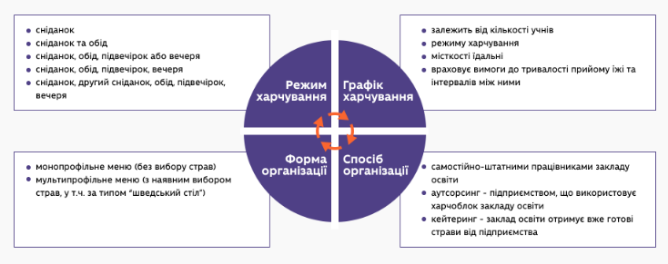
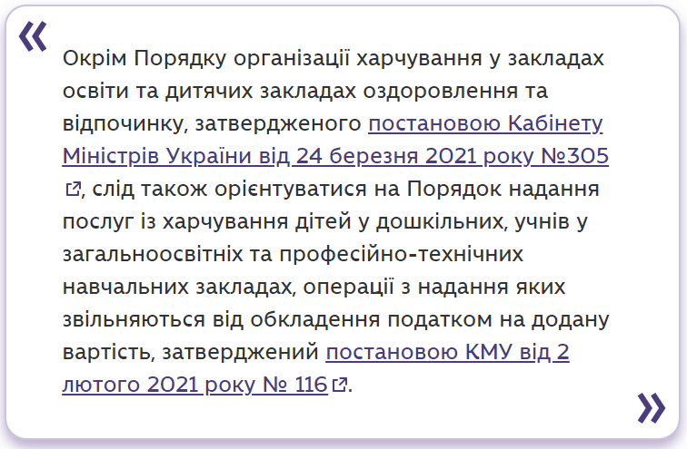
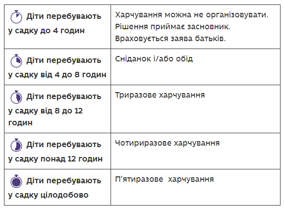
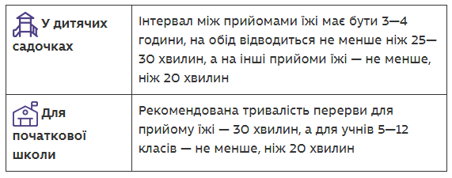

Не менш важливо вирішити, як організувати закупівлю продуктів або послуг шкільного харчування (спеціалістами управління освіти централізовано або школою самостійно в межах фінансової автономії), як діти розраховуватимуться в шкільній їдальні, а також налагодити комунікацію з учнями й батьками, щоб інформувати їх про організацію харчування.
Щоб діти вчасно отримували якісне харчування, потрібно:
- визначити в закладі освіти відповідального за харчування;
- визначити примірне чотиритижневе сезонне меню та щоденне меню-розклад;
- погодити меню в територіальному підрозділі Державної служби з питань безпечності харчових продуктів та захисту споживачів, якщо воно складене самостійно;
- організувати закупівлю продуктів або послуг (найчастіше це функція управління освіти);
- організувати бракераж (якісне оцінювання продуктів), а також постійний внутрішній контроль якості;
- скласти переліки учнів, які отримують платне й безкоштовне харчування, а також тих, яким потрібне дієтичне харчування;
- мати в штаті працівників, які повноцінно забезпечать усі процеси організації харчування;
- подбати, щоб усі учні мали доступ до питної води;
- вести всю необхідну документацію.
Режим харчування
Режим харчування може бути різним — від одноразового до п’ятиразового. Санітарний регламент вимагає, щоб для учнів було організоване щонайменше одноразове гаряче харчування відповідно до норм харчування, принаймні сніданок.
Дворазове харчування (сніданок та обід) за згодою батьків організовується для учнів 5—9 класів, які відвідують групу продовженого дня.
Три рази можуть їсти учні початкової школи, які ходять у групу продовженого дня, й окремі пільгові категорії учнів.
Чотириразове харчування організовують учням спеціальних шкіл і шкіл-інтернатів, а п’ятиразове з не менше ніж триразовим споживанням гарячої їжі — учням у закладах освіти та закладах оздоровлення та відпочинку з цілодобовим перебуванням здобувачів освіти, наприклад, дітей у шкільному пансіоні.
Режим харчування дітей у закладах оздоровлення та відпочинку залежить від режиму його роботи та визначається засновником закладу. Інтервал між прийомами їжі не повинен перевищувати чотирьох години.
Кратність харчування в закладі освіти
Кратність харчування в яслах і дитсадках залежить від режиму роботи. З 1 вересня 2021 року має бути так:
Графік харчування
На основі режиму харчування варто скласти графік, за яким учні організовано їстимуть у їдальні. Графік має врахувати місткість їдальні та кількість дітей, які їстимуть одночасно. Основні вимоги до графіка харчування в закладах освіти такі:
Способи організації харчування
Спосіб організації харчування залежить від того, чи є в закладі харчоблок, як він оснащений, чи є працівники, які готують їжу, і чи громада фінансово спроможна залучити підприємства, що постачають продукти або послуги з харчування. Існують три основні способи.
- Заклад організовує харчування сам.
- Аутсорсинг.
- Кейтеринг.
Будь-який з цих способів організації харчування в школах може бути доповнений продажем їжі та напоїв у буфетах або торговельних чи вендингових автоматах.
Постачальником для школи або дитсадка може бути лише підприємець або компанія, що спеціалізується на виробництві і/або продажі продуктів чи послуг з харчування. Купувати їжу для шкільної їдальні, наприклад, на продовольчому ринку або з рук заборонено. Також не можна приносити їжу як спонсорську чи батьківську допомогу.